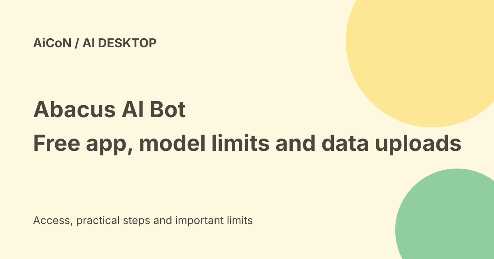

Abacus AI Bot: free app, model costs and diagnostic uploads
Abacus AI Bot is a free, MIT-licensed desktop agent with messaging and work-service connections. Its current repository says a free Abacus.AI account starts with 2,000 credits and selected free models. Local installation does not mean every model call or conversation stays on the computer.

What does the app do?
The official site describes an agent that lives on a computer and can be used through messaging channels such as WhatsApp, Telegram and Discord. The repository lists work connectors and local tools.
Those capabilities can read files or communicate through linked accounts. Set their scope deliberately instead of connecting everything during the first session.
The app and the model are separate
The repository describes the desktop app as free and MIT-licensed. That licence covers the app's code, not unlimited use of every external AI model, connector or service.
Open-source code can be inspected and modified. It is not proof that every dependency, model or automatic action is safe.
Starter credits and free models
The current repository says a free account starts with 2,000 credits and offers a selection of free models. Provider catalogues and quotas can change.
Do not convert the starter balance into a guaranteed number of days or tasks. Long contexts, generated outputs and repeated tool work can change consumption.
Bring-your-own-provider choices
The project supports provider keys, subscriptions and local OpenAI-compatible models. The actual endpoint determines where a model request goes and who bills it.
A remote provider accessed from a local app is still remote. A subscription is not automatically an API credit balance, and a free model may have rate limits too small for a large agent request.
Routing does not make every turn free
The official models guide describes RouteLLM - Open selecting eligible free routes and avoiding premium fallback merely because a free route fails.
Read the actual selected model and usage page. A separate Abacus.AI desktop provider guide describes defaults and billing for its own surfaces; do not assume all CLI, extension and bot controls are identical.
Important privacy correction
The bot's own privacy document says it automatically uploads conversation transcripts, application logs and diagnostics to Abacus.AI over HTTPS when an Abacus.AI key is saved. It says this also applies to conversations using other providers.
That is a material limit to the original local-agent description. Read the current document before using confidential code, client files or private messages.
Log redaction is not transcript redaction
The privacy guide says recognised secrets are redacted from application logs, but this does not apply to conversation transcripts. It also warns that file reads are not filtered for secrets.
If a tool reads a secrets file, its contents may reach the model provider and an uploaded transcript. Keep keys and private configuration outside the permitted workspace; do not rely on the word local to protect them.
Other services receive their own data
Prompts and included files go to the chosen model provider. Connectors and messaging tools send data to the services involved in the request.
Settings and conversations may have local copies, but deleting those copies does not delete data already uploaded. Check revocation and deletion procedures separately.
Permissions and automatic routines
The repository says onboarding may create a Chief of Staff bot with a weekday check-in template, and a bot-created routine can run once immediately.
Review routines, auto-replies, account scopes and external-action approvals. An assistant that can draft a reply should not be assumed to have permission to send it to every contact.
India and practical fit
The free-app claim is not an India-specific paid checkout quote. External providers can have country limits, taxes, currency charges or separate account requirements.
Confirm operating-system support and available installers on the official download route. This guide did not install the app, connect a messaging account or measure local performance.
A safer start
- Use the official site and repository.
- Read current model and privacy documents.
- Choose a harmless workspace without secrets.
- Select the model and check its billing route.
- Connect only the services needed for one test.
- Keep external messages and paid actions under review.
- Check any routines created during setup.
- Inspect output, usage and data-retention limits.
Do not disable security tools or run an unfamiliar install command solely because a guide links it.
What changed since the original post?
We keep the free app and starter-credit distinction but add the documented automatic transcript uploads. We separate local storage, local model execution and remote providers rather than treating them as one privacy promise.
Frequently asked questions
Does local install mean offline?
No. Models and connected services may receive data.
Are all model calls free forever?
No. Check quotas, credits and provider charges.
Does deleting local history erase uploads?
The privacy guide says it does not.
Sources: Official Abacus AI Bot website · Official MIT repository and starter-credit description · Bot model routing documentation · Bot privacy and automatic-upload documentation · Related desktop provider guide: different surface. Checked 7 October 2026.